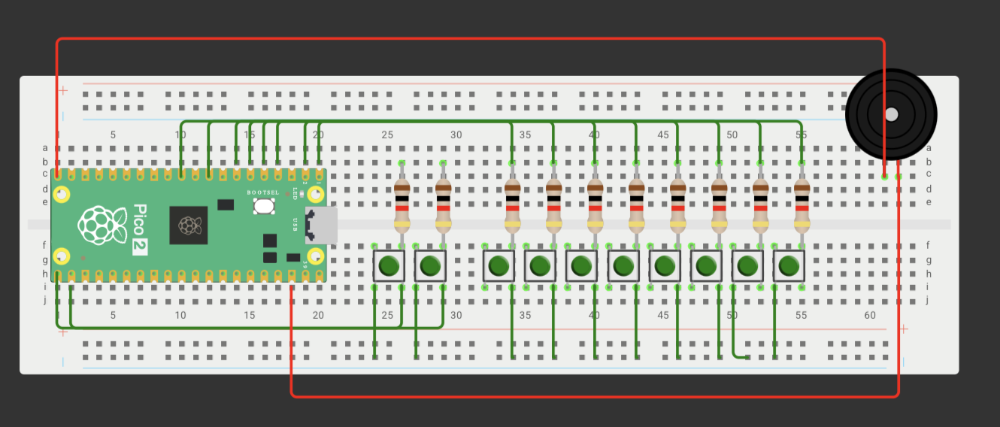

Session 5 — PWM
Goal: Develop a piano that uses PWM to generate different musical notes and allows for volume control via buttons.
Prediction: Each button is expected to produce a different note based on its programmed frequency, and the volume buttons should allow for adjustment of the sound intensity.
Set Up
We connect the Raspberry Pi to a buzzer and ten buttons: eight intended for playing different musical notes, and two additional ones for increasing and decreasing the volume.

What I did
First, we programmed the Raspberry Pi to generate various musical notes using PWM, configuring the frequencies corresponding to each note and adding buttons to select them and adjust the volume. Afterward, I physically assembled the circuit, connecting the buzzer, the buttons, and the microcontroller to integrate the components with the code.
Evidence
Code
nt main() {
stdio_init_all();
gpio_set_function(LED_PIN, GPIO_FUNC_PWM);
uint slice = pwm_gpio_to_slice_num(LED_PIN);
uint chan = pwm_gpio_to_channel(LED_PIN);
pwm_set_wrap(slice, TOP);
pwm_set_chan_level(slice, chan, 0);
pwm_set_enabled(slice, true);
const uint note_buttons[10] = {B1, B2, B3, B4, B5, B6, B7, B8, B9, B10};
const float note_hz[10] = {
1046.50f, 1174.66f, 1318.51f, 1479.98f, 1567.98f, 1760.00f, 1975.53f, 2093.00f
};
for (uint i = 0; i < 10; ++i) {
gpio_init(note_buttons[i]);
gpio_set_dir(note_buttons[i], GPIO_IN);
gpio_pull_up(note_buttons[i]);
}
// Botones de volumen (entrada con pull-up)
gpio_init(VOLUME_UP_PIN); gpio_set_dir(VOLUME_UP_PIN, GPIO_IN); gpio_pull_up(VOLUME_UP_PIN);
gpio_init(VOLUME_DOWN_PIN); gpio_set_dir(VOLUME_DOWN_PIN, GPIO_IN); gpio_pull_up(VOLUME_DOWN_PIN);
const uint32_t f_clk = clock_get_hz(clk_sys);
uint volume = 60;
while (true) {
// Volumen: sube o baja de 10 en 10 (el sleep sirve de antirrebote)
if (!gpio_get(VOLUME_UP_PIN) && volume < 100) {
volume += 10;
sleep_ms(200);
}
if (!gpio_get(VOLUME_DOWN_PIN) && volume > 0) {
volume -= 10;
sleep_ms(200);
}
int selected_note = -1;
for (uint i = 0; i < 10; ++i) {
if (!gpio_get(note_buttons[i])) {
selected_note = (int)i;
break; // Si se mantienen varias teclas, tiene prioridad la de GPIO más bajo.
}
}
if (selected_note >= 0) {
float divider = (float)f_clk / (note_hz[selected_note] * (TOP + 1));
uint16_t level = (uint16_t)(((TOP + 1) / 2) * volume / 100);
pwm_set_chan_level(slice, chan, 0);
pwm_set_clkdiv(slice, divider);
pwm_set_chan_level(slice, chan, level);
} else {
pwm_set_chan_level(slice, chan, 0);
}
sleep_ms(5);
}
}
What went wrong
What went wrong during this exercise was the operation of the volume-up and volume-down buttons; none of them responded correctly, which prevented the volume adjustment from working as expected.
Disclosure
Through this exercise, we learned how PWM works by applying it to our piano; by using signals that switch rapidly between on and off states, we were able to produce different musical notes. I also came to understand how modifying certain signal parameters allows for changes to the sound and control over its intensity.